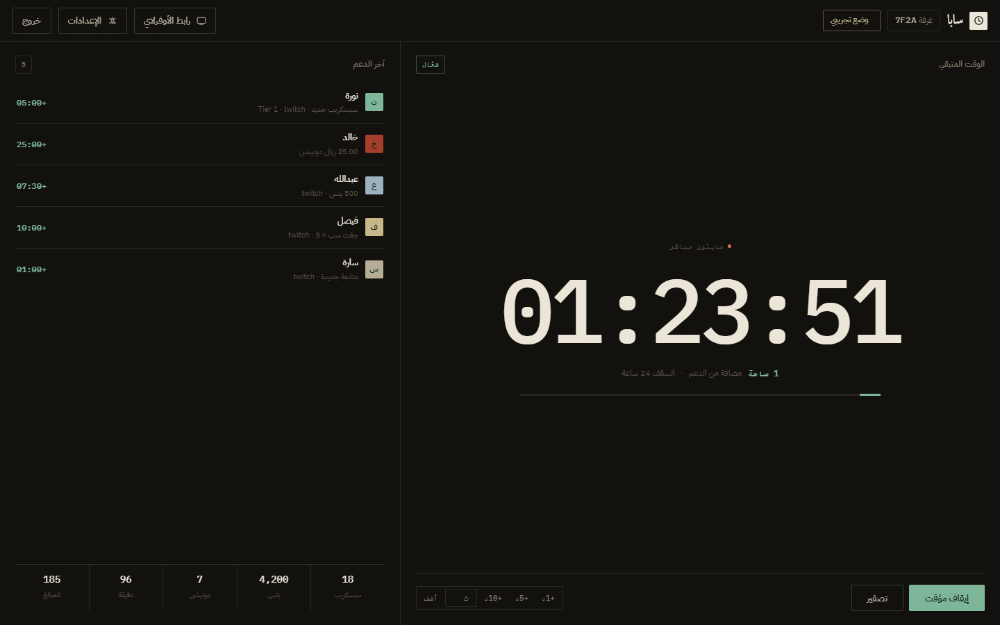

كل دعم يزيد وقت بثّك
اربط Streamlabs مرة واحدة، وكل سبسكريب أو بتس أو دونيشن يضيف وقتًا على العدّاد لحظيًا.
بدون تسجيل · التوكن يبقى في متصفحك
- المنصة
- Streamlabs
- التأخير
- أقل من ثانية
- الربط
- 30 ثانية
- الأوفرلاي
- OBS · Browser

الربط يستغرق 30 ثانية · بدون سيرفر وسيط
من التوكن إلى أوفرلاي شغّال
التوكن يُخزَّن في متصفحك فقط، ويُستخدم للاتصال المباشر بسوكت Streamlabs. ما يمر على أي سيرفر وسيط.
ما نطلب بريد ولا كلمة مرور. التوكن هو كل اللي نحتاجه، وتقدر تلغيه من Streamlabs في أي وقت.
ما عندك توكن الحين؟
افتح لوحة Streamlabs
من القائمة: Settings ثم API Settings.
انسخ Socket API Token
مو الـ Legacy Token — الاثنين متشابهين بالشكل، والمطلوب هو اللي تحت «Socket API Token».
الصقه وشغّل
الاتصال يبدأ فورًا، والعدّاد يفتح على طول.
العدّاد يتصرّف زي ما تبيه
معدّل مستقل لكل نوع دعم، سقف يمنع الانفجار، وقواعد تتجاوز المعدل العام للمبالغ الكبيرة.
لكل نوع دعم سعره
المتابعة غير السبسكريب، والبتس غير الماسة. تحكم بكل واحد على حدة، وتقدر تصفّر أي نوع ما تبيه يحرّك العدّاد.
- وحدات واضحة: ثانية، دقيقة، ساعة
- المعدلات تنحفظ تلقائيًا مع الغرفة
| نوع الدعم | الوقت | الوحدة |
|---|---|---|
| دونيشن | 1.0 | دقيقة / $ |
| سبسكريب | 5.0 | دقيقة |
| جفت سب | 2.0 | دقيقة |
| كل 100 بتس | 1.5 | دقيقة |
| متابعة جديدة | 1.0 | دقيقة |
| كل لايك | 0.0 | مُعطّل |
سقف يحمي عدّادك
لو وصلت هدية كبيرة، الوقت الزايد ما يختفي بصمت — يظهر لك إن الإضافة وصلت للسقف، وتعرف بالضبط كم انضاف وكم انقص.
- تنبيه فوري عند التجاوز
- حاسبة قبل البث تجرّب أي مبلغ
ثلاث أشياء ما نتنازل عنها
التوكن يبقى عندك
يُخزَّن في متصفحك ويُستخدم للاتصال المباشر بـ Streamlabs. ما يُرسل لأي سيرفر، وتقدر تلغيه من لوحتهم في أي وقت.
رمز دخول للاستوديو
أربعة أرقام تُنشأ مع الغرفة. لو انتشر رابط الاستوديو، ما أحد يقدر يعدّل العدّاد بدونها.
يكمّل من حيث توقف
لو انسدّ التبويب أو انقطع النت، العدّاد ما يحسب وقت الغياب — يرجع لنفس الثانية اللي وقف عندها.
أسئلة تجي كثير
هل يحتاج أسجّل حساب؟
وين يُحفظ التوكن بالضبط؟
هل يقرأ أحداث TikTok؟
الأوفرلاي يشتغل على OBS و Streamlabs Desktop؟
هل فيه حد أقصى للوقت؟
جاهز تشغّل عدّادك؟
توكن واحد، وثلاثين ثانية، وبثّك ما يوقف.